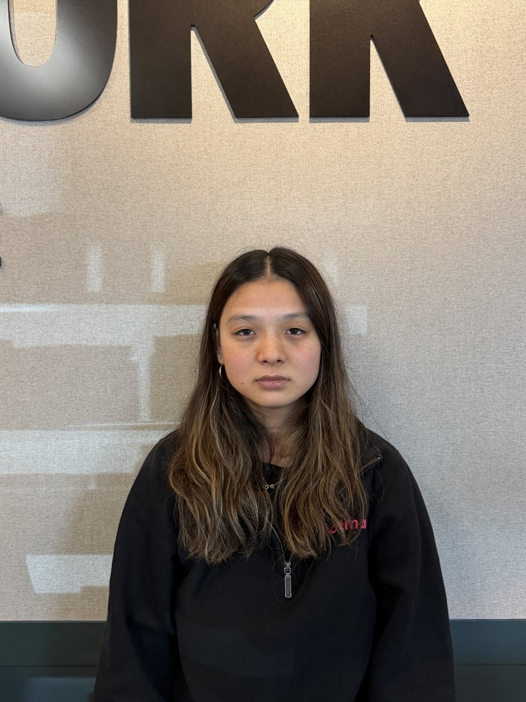


Serena Beddoe
For the first portrait I stood close to the subject and used the lowest zoom. I then stepped back and increased the zoom for each photo. The face stays about the same size across Images 1 to 5.

The close image makes features nearer the lens look a little larger relative to the rest of the face. Image size is proportional to focal length divided by distance. When the camera is close, the difference in distance from the lens to the nose and the ears is a larger fraction of the total distance. Stepping back reduces that difference in the projected face. Zoom brings the face back to about the same size, but it does not undo the change in perspective.
The facial change is subtle here. The background letters make the change in framing easier to see.
I took Image 1 from farther away at 4x. I then moved toward the bench and took Image 2 at 1x. The bench is roughly the same width in both photos.


In Image 1 the tree and building look larger relative to the bench. The distant parts of the scene seem closer to the bench than they do in Image 2. The ratio between the distance to the bench and the distance to the background gets closer to one as the camera moves back. That makes their projected sizes more similar. The 4x zoom keeps the bench large in the frame, but the camera position is what changes the perspective. Image 2 also shows more sky and walkway because it uses the wider 1x view.
The bottle is the foreground subject for this shot. The camera moves back while the zoom increases, with the bottle kept near the same size in the frame. The background changes its size relative to the bottle.
The camera model gives an approximate image height of fH/Z for an object of height H, distance Z and focal length f. Increasing both f and Z can keep f/Z almost constant for the bottle. The background is farther away, so its distance changes by a different proportion. Its apparent size changes even when the bottle stays roughly fixed.
Each scan has three grayscale exposures stacked in one file. I split the top third into blue, the middle third into green, and the bottom third into red. The dimensions can differ by a row, so I resized green and red to match blue.
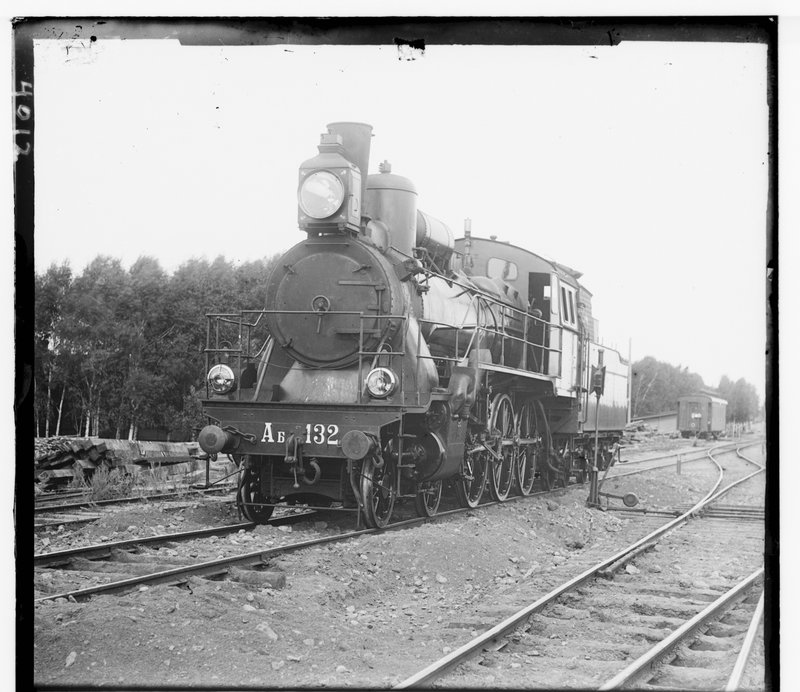
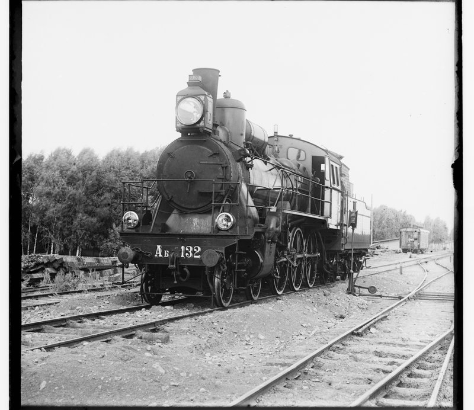
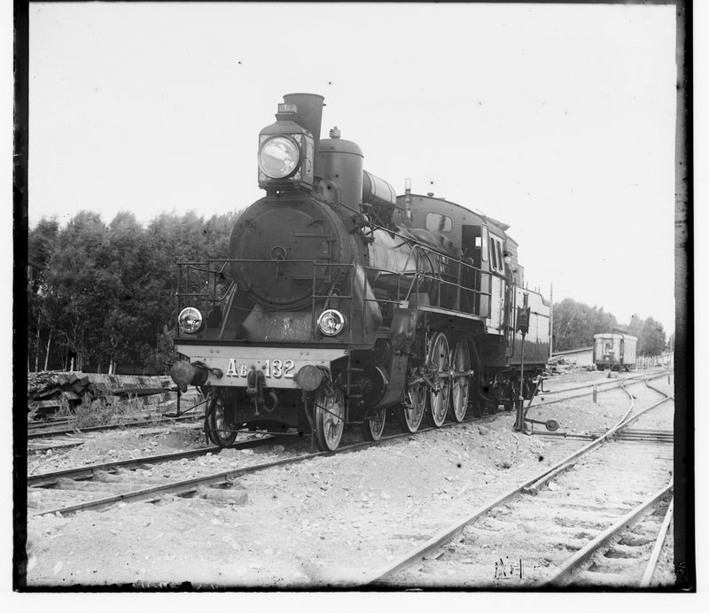
I kept blue fixed and tested horizontal and vertical shifts for green and red. At each position, an interior crop from the moving channel is compared with the same area of blue. The lowest L2 distance gives the offset for that channel.
L2 = sqrt(sum over the crop of (blue - shifted channel) squared). I scored the interior because the plate borders do not represent the scene. The reported offsets describe where the crops were sampled relative to blue. The final placement uses the opposite sign.

blue = img[0:int(total_rows/3)]. I took the next two thirds for green and red and used cv2.resize to match their dimensions to blue.blue_subsampled = blue[::2, ::2] and the same slice for green and red. It keeps every second row and column. Each L2 comparison uses about one quarter of the original pixels, which saved time. There is no blur before the slice, and the final full-size offsets are limited to even pixels.estimated_border_size = int(min(height, width)*0.10). The crop side is size = min(height, width)-estimated_border_size*4. It stays away from the plate edges. The x and y loops test offsets from the negative radius to just below the positive radius.np.linalg.norm(blue_img_crop.astype("float32") - green_img_crop.astype("float32")) and the matching red expression. I keep the lowest score for each channel.new_green_image_offset = np.array(green_image_offset)*2. The output places green and red with the opposite sign of the measured crop offsets.I tested the train, portrait, and building plates. These offsets are in full-resolution pixels.
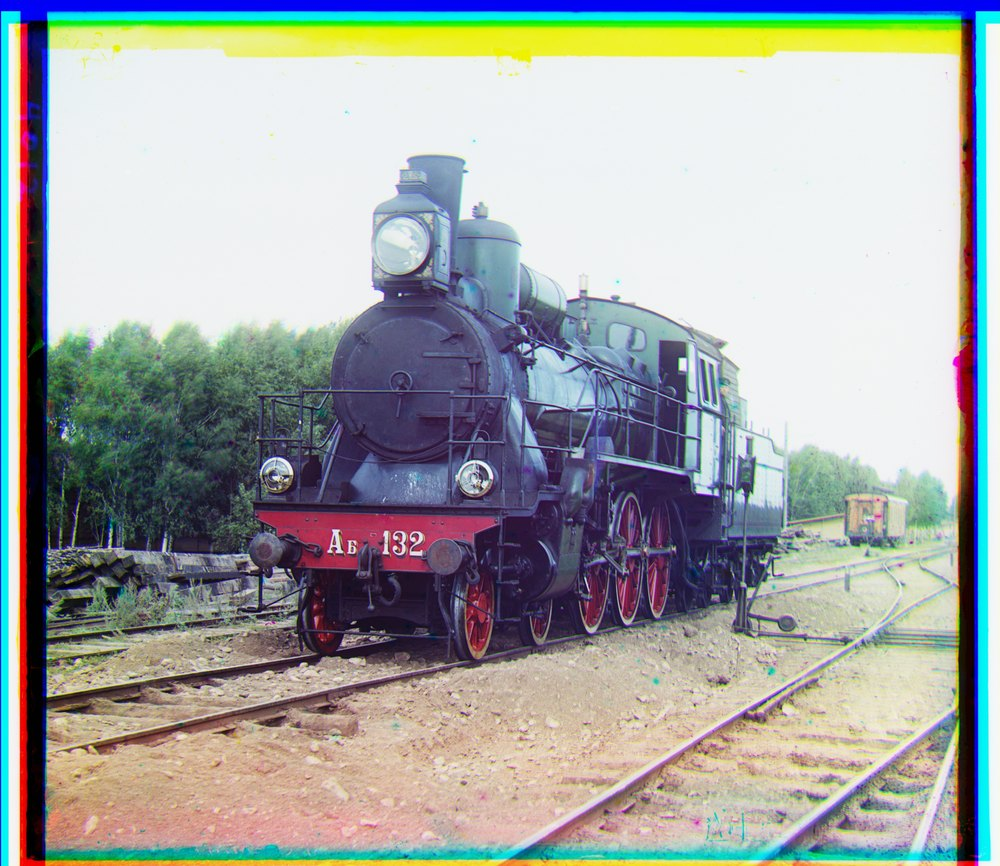
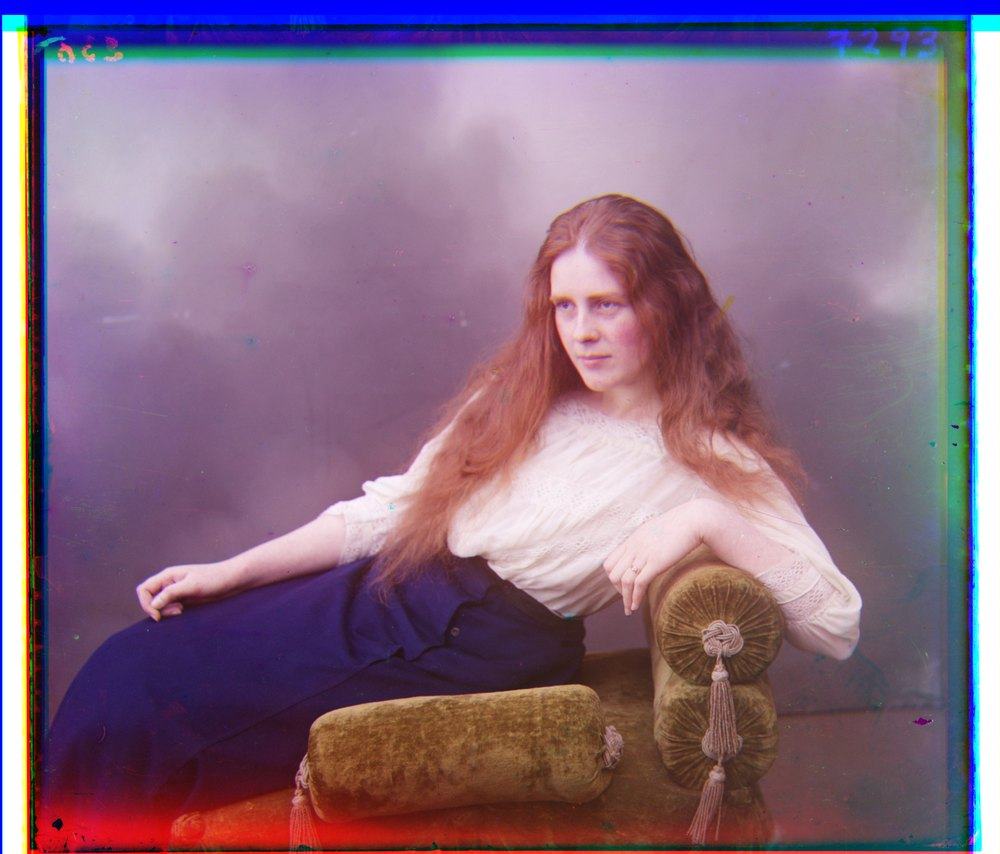
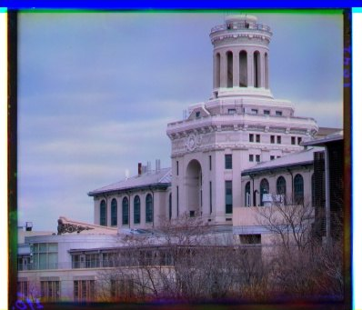
downsample loop adds cv2.pyrDown(blue_img) and does the same for green and red. It smooths before halving each dimension. I use three reductions when max(blue_img.shape) is over 1000 pixels and one otherwise.xy_sweep = int(min(height, width)*0.10). The green and red estimates start at [0, 0]. I use the same float32 L2 comparison as before.for i in range(len(blue_pyramid)-1, -1, -1) goes toward full resolution. I add a local correction and double the estimate for the next level with old_green_image_offset = new_green_image_offset*2. The local sweep is 10 pixels at small levels and 3 pixels above 300 pixels. The next crop side is int(min(height, width)*0.6).cv2.normalize to put each channel on a 0 to 255 range. I moved the green and red means toward the blue mean with cv2.convertScaleAbs. These adjusted arrays choose the offsets; the saved image uses the original channel values.I changed the pyramid depth, then tried intensity normalization and a mean brightness adjustment.
| Trial | Large plates | Small plates | Normalize | Mean shift |
|---|---|---|---|---|
| 1 | 1 | 1 | No | No |
| 2 | 2 | 2 | No | No |
| 3 | 3 | 1 | No | No |
| 4 | 3 | 1 | Yes | No |
| 5 | 3 | 1 | Yes | Yes |
Trial 1 missed the red channel on the mural (01269v). Trial 2 also missed the fruit stall (01728v). Trials 3 and 4 put the red channel far from the textile shop (01725u). Normalization alone did not fix these cases. In Trial 5, the mean brightness adjustment changed those offsets and reduced the double edges.

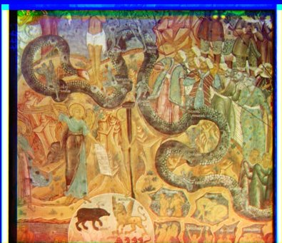
The mural red channel is displaced.
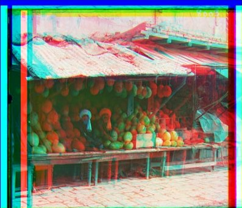

The fruit stall roof and produce are doubled.

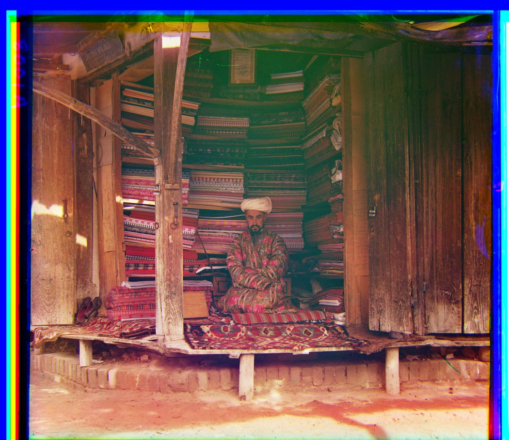
The red channel is far from the shop.

Normalization alone still misses the mural.
These are the Trial 5 results. I removed the blank canvas for display and left the coloured scan borders.
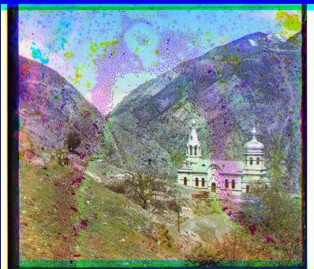


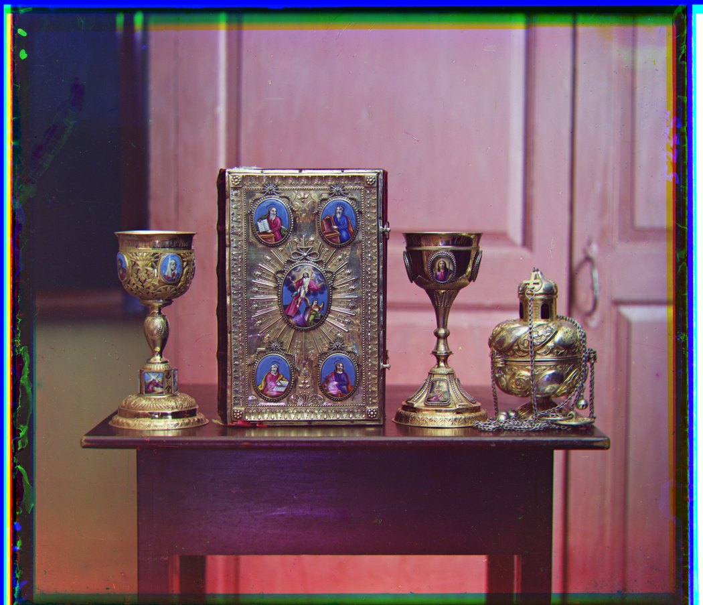

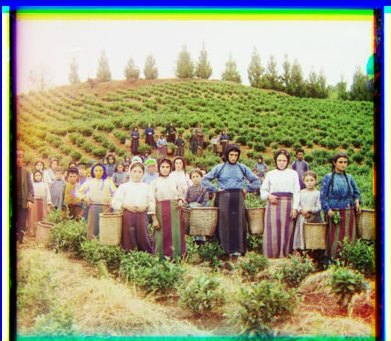
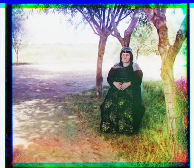

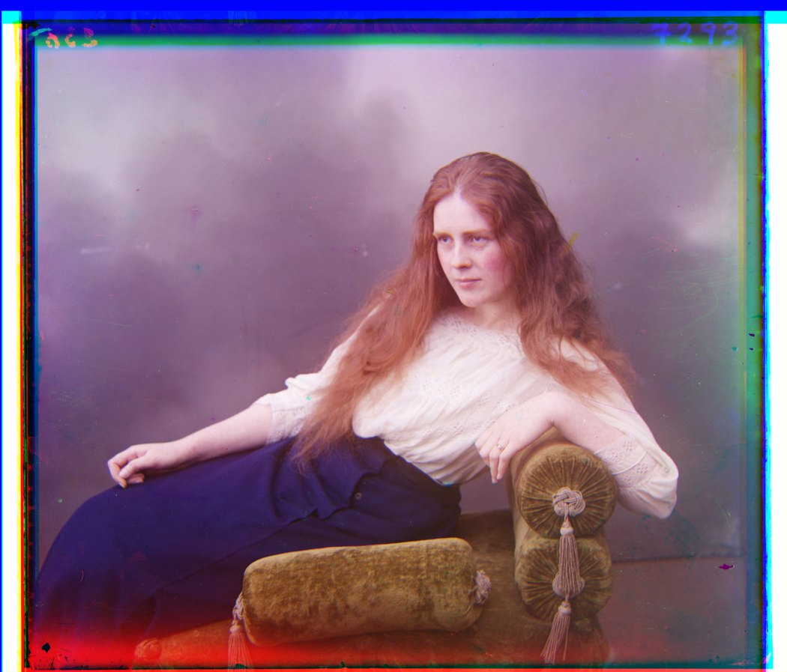

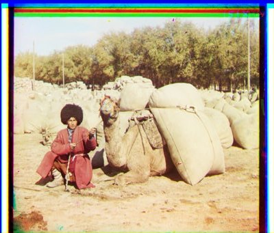
I also ran the final settings on beans, siren, and sculptures from the collection. I did not tune the settings separately for these images.


These are the Trial 5 offsets in full-resolution pixels. Each pair is a crop position relative to blue.
| Image | Plate | Green (x, y) | Red (x, y) |
|---|---|---|---|
| 1 | 00056v | (-1, -5) | (-1, -13) |
| 2 | 00125v | (-2, -5) | (-1, -10) |
| 3 | 00163v | (-1, 3) | (-1, 4) |
| 4 | 00458u | (-7, -42) | (-32, -86) |
| 5 | 00804v | (2, -6) | (4, -13) |
| 6 | 01007a | (-13, -59) | (-13, -128) |
| 7 | 01047u | (-20, -24) | (-34, -72) |
| 8 | 01164v | (-2, -6) | (-3, -11) |
| 9 | 01269v | (-2, -6) | (-3, -14) |
| 10 | 01522v | (-2, -6) | (-2, -13) |
| 11 | 01597v | (-1, -7) | (-1, -16) |
| 12 | 01598v | (0, -8) | (1, -17) |
| 13 | 01657u | (-8, -52) | (-13, -113) |
| 14 | 01725u | (-47, -76) | (-79, -162) |
| 15 | 01728v | (-1, -9) | (-1, -19) |
| 16 | 01861a | (-39, -70) | (-62, -147) |
| 17 | 10131v | (-2, -5) | (-3, -12) |
| 18 | 31421v | (0, -8) | (0, -14) |
| 19 | beans | (4, -4) | (9, -11) |
| 20 | siren | (0, -5) | (2, -10) |
| 21 | sculptures | (-1, -2) | (-1, -12) |
I only estimated x and y shifts. Movement between exposures, plate damage, and differences in channel brightness can still leave colour fringes. The output also keeps the scan borders. There were no ground-truth offsets for me to calculate a numerical alignment error.
See all results from Trials 1 to 4.
Source: SYDE 671 Assignment 1 handout, adapted from Berkeley CS180 Project 1. Historical scans: Prokudin-Gorskii collection, Library of Congress.